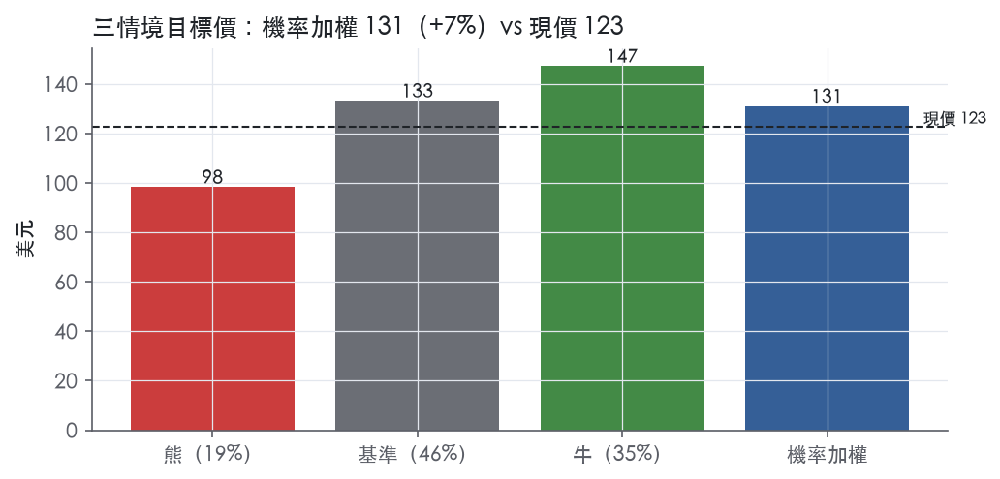
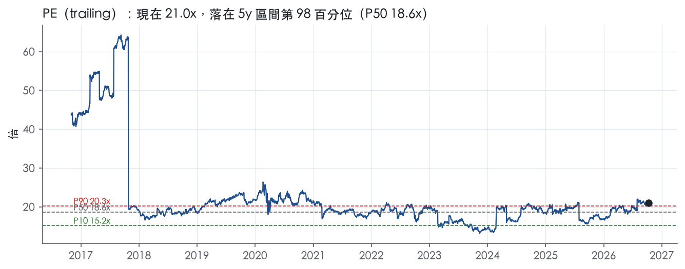
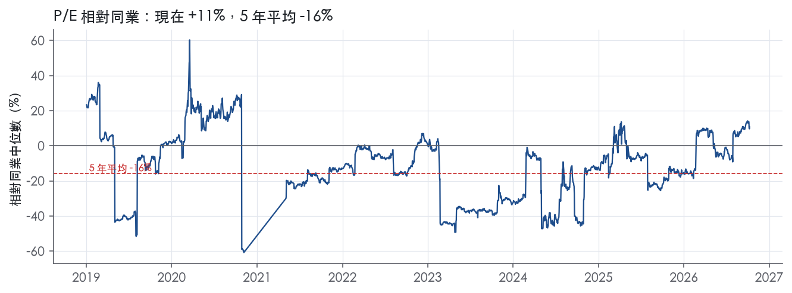
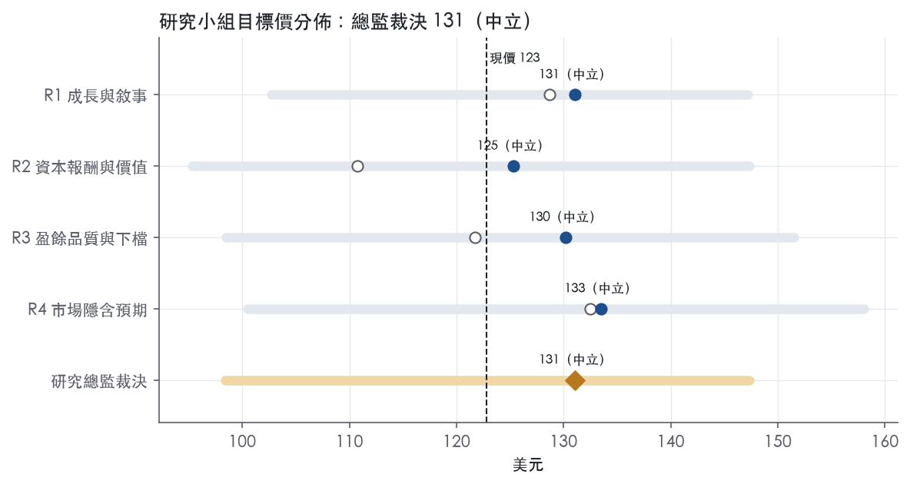
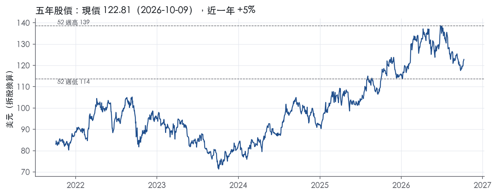

評等總表 › 公用事業 › AEP
盈餘低估、倍數持平，中性｜評等 中立｜目標價 131
| 評等 | 中立 |
| 12 個月目標價 | 131 美元 |
| 現價 | 122.81 美元（2026-10-09） |
| 預期報酬 | 股價 +6.7%＋股息 3.1%＝總報酬 +9.8%；同業籃門檻 9.2%，超額 +0.6% |
| 估值方法 | P/E 19.0x，套在第 5–8 季的EPS（也就是一年後的未來四季） |
| 三情境 | 熊 98／基準 133／牛 147 |
| 研究流程 | 四位研究員兩輪辯論＋研究總監裁決 |
| 資料來源 | SEC EDGAR XBRL、Tiingo、FRED（全免費） |
盈餘低估、倍數持平，中性（研究總監裁決，四位研究員兩輪辯論後）
評等 中立｜12 個月目標價 131 美元（總監三情境機率加權 132 與研究員中位數 131 各半）｜現價 122.81（2026-10-09）
預期報酬：股價 +6.7%＋股息 3.1%＝總報酬 +9.8%。同業籃門檻 9.2%，超額 +0.6%。
估值方法：P/E 19.0x，套在第 5–8 季的EPS（也就是一年後的未來四季）。三情境：熊 98（19%）／基準 133（46%）／牛 147（35%）。
什麼會讓研究總監改變看法：Q3 計畫低於 780 億、德州合約遲延或認列在建工程減損、2027 指引成長低於 7%，轉空；計畫滾動到 2031 上修且 2027 指引在 >9% 路徑而股權需求不增，倍數上看 20x、轉多。
| 過去四季（實際，FY2026Q2） | 未來四季 | 第 5–8 季 | 第 9–12 季 | |
|---|---|---|---|---|
| 營收（B） | 22.8B | 24.8B | 26.8B | 28.9B |
| 營收成長 | 10.3% | 8.8% | 8.0% | 8.0% |
| 營業利益率 | 23.0% | 25.0% | 25.0% | 25.0% |
| EPS（美元） | 5.84 | 6.41 | 7.01 | 7.64 |
| EPS 成長 | -14.7% | 9.8% | 9.4% | 9.0% |
| 每股股息（美元） | 3.78 | 3.78 | 3.78 | 3.78 |
| P/E（現價） | 21.0x | 19.2x | 17.5x | 16.1x |
| 股息殖利率（現價） | 3.1% | 3.1% | 3.1% | 3.1% |
過去四季為申報數字；預測為研究總監的假設、程式計算。倍數與殖利率都用現價計算，用來看現價對應各期獲利的高低。
| 情境 | 機率（歷史） | 故事 | 未來四季營收成長 | 第 5–8 季營益率 | 倍數 | 目標價 | 股價漲跌 |
|---|---|---|---|---|---|---|---|
| 熊 | 19%（17%） | 對應風險表第 1 條德州大用戶遲延或取消致在建工程減損、第 2 條駁回擴大、第 3 條融資成本上升，倍數回到前瞻帶 P25–P50 之間 | 8.8% | 23.0% | 16.5x | 98 | -19.9% |
| 基準 | 46%（46%） | EPS 回到指引路徑下緣、市場對修正後 EPS 的前瞻倍數持平，報酬來自盈餘成長與股息 | 8.8% | 25.0% | 19.0x | 133 | 8.5% |
| 牛 | 35%（38%） | Q3 計畫滾動到 2031 並納入逾 100 億機會、2027 指引落在 >9% CAGR 路徑、類股重評延續，倍數至 trailing 5y P90 20.3x | 8.8% | 25.5% | 20.0x | 147 | 20.0% |
目標價由程式依研究總監的驅動與倍數計算；機率由研究總監給定。括號內是歷史頻率：把這檔股票過去十年 12 個月報酬的波動形狀，置中在基準情境，結果落在各情境附近的比例。

四位研究員用不同方法各自估值，回應研究總監的質疑後交出第二輪，最後由總監逐點裁決。各研究員的主張見第七章，裁決理由見第八章，完整論證見《研究底稿》。
| 立場（一輪→二輪） | 加權目標價（一輪→二輪） | 評等（一輪→二輪） | 第二輪倍數 | 熊～牛目標價 | |
|---|---|---|---|---|---|
| R1 成長與敘事 | 中性→中性 | 129→131 | 中立→中立 | 20.5x | 103～147 |
| R2 資本報酬與價值 | 看空→中性 | 111→125 | 賣出→中立 | 18.5x | 95～147 |
| R3 盈餘品質與下檔 | 中性→中性 | 122→130 | 減碼→中立 | 18.5x | 98～152 |
| R4 市場隱含預期 | 中性→中性 | 133→133 | 中立→中立 | 19.0x | 100～158 |
| 研究總監裁決 | 中性 | 131 | 中立 | 19.0x | 98～147 |
目標價由程式依各自的驅動與倍數計算；評等＝機率加權總報酬 − 同業籃門檻。
AEP 是一家垂直整合的電力控股公司，透過旗下公用事業子公司從事發電、輸電與配電業務，服務範圍覆蓋阿肯色、印第安納、肯塔基、路易斯安那、密西根、俄亥俄、奧克拉荷馬、田納西、德州、維吉尼亞及西維吉尼亞等 11 個州¹。公司以成本加合理報酬（cost-of-service）的管制費率模式運作，多數州核准的 ROE 落在 9.25%–10.5% 區間¹。截至 2025 年底，AEP 子公司共有 17,581 名員工，AEP 本身作為控股公司不直接雇用員工¹。依 8-K 揭露，AEP 以近 1.8 萬名員工、4 萬英里輸電線與逾 25.2 萬英里配電線，服務 11 個州的 560 萬名客戶，是本質上典型的受管制電力公用事業，營收與現金流可預測性高、受天然氣與電力商品價格波動影響有限²。這是一家典型的「管制資產+受益於用電量成長」的公用事業股，而非商品週期股。
AEP 的四大可報導分部為垂直整合公用事業（Vertically Integrated Utilities）、輸配電公用事業（Transmission and Distribution Utilities）、AEP 輸電控股（AEP Transmission Holdco）及發電與行銷（Generation & Marketing），其餘活動列為「Corporate and Other」¹。垂直整合公用事業涵蓋 AEGCo、APCo、I&M、KGPCo、KPCo、PSO、SWEPCo 及 WPCo，截至 2025 年底自有約 25,400 MW 發電容量，燃料結構為煤與褐煤 43%、天然氣 22%、核能 19%、再生能源 16%¹。以 2Q26 GAAP 獲利結構看，垂直整合公用事業貢獻 2.84 億美元（占當季合併 GAAP 獲利 7.13 億美元最大宗），輸配電公用事業貢獻 2.22 億美元，AEP 輸電控股貢獻 2.25 億美元，發電與行銷貢獻 0.97 億美元²。輸配電公用事業由 AEP Texas 與 OPCo 構成，前者屬 ERCOT、後者屬 PJM¹。AEP 輸電控股下轄 State Transcos，2025 年底在役輸電及其他資產達 171 億美元，2030 年前計畫再建 116 億美元輸電資產，是公司資本支出成長最明確的引擎之一¹。發電與行銷主要經營零售售電（AEP Energy，約 92.2 萬個客戶帳戶，覆蓋伊利諾、賓州、德拉瓦、馬里蘭、新澤西、俄亥俄及華府）及批發交易業務¹。各分部占合併 GAAP 獲利比重會隨季度波動，特別是輸電控股在 2025 年出售少數股權後基期較高，10-K 未揭露各分部占營收的固定比例。
AEP 服務的主力產業客群包括石化製品、化學製造、油氣開採、管線運輸及原生金屬製造等重工業用戶，部分服務區域（如 AEP Texas、APCo、OPCo）亦服務資料中心與加密貨幣運算用電戶¹。零售通路以各州公用事業委員會核准費率銷售予終端客戶，批發端則透過 PJM 與 SPP 兩大區域傳輸組織（RTO）銷售予其他電力公司、農電合作社、市政機構及其他市場參與者¹。地理上最大單一客戶基礎集中在德州（AEP Texas，約 113.3 萬零售客戶）與俄亥俄（OPCo，約 154.7 萬零售客戶）¹。近期成長動能高度集中在德州與資料中心/超大規模運算（hyperscaler）用電需求：2Q26 新增 6 GW 的大型用電合約「主要在德州」，1Q26 德州新增用電承諾達 41 GW，占全公司新增用電量的大宗²³。這代表 AEP 的成長故事已從傳統住宅/工業用電轉向資料中心驅動的大型用電戶（large load），客戶集中度與合約執行力是未來評價的關鍵變數。
FY2025Q3 營收 6.01B，年增 10.9%，營益率 25.3%【資料包】。FY2025Q4 營收 5.32B，年增 13.2%，但營益率回落至 21.0%、EPS 僅 1.13（GAAP），反映冬季天氣與費率調整的季節性波動。1Q26：GAAP 每股盈餘 1.61 美元、營業每股盈餘 1.64 美元，優於去年同期 1.50／1.54 美元，公司重申 2026 年營業每股盈餘指引 6.15–6.45 美元，並將五年資本計畫由 720 億美元上調至 780 億美元³。2Q26：GAAP 獲利 713M 美元或每股 1.31 美元，低於去年同期的 1,226M 美元或每股 2.29 美元，主因 2025 年輸電少數股權出售的基期效應及稅務項目時點差異；但營業每股盈餘 1.36 美元，公司將全年營業每股盈餘指引上調至 6.25–6.55 美元²。公司同時將 2030 年前新增用電合約擴大至 69 GW，並已鎖定約 13 GW 燃氣機組容量以滿足用電成長需求²。
公司將成長引擎歸結為大型用電戶（尤其是資料中心與超大規模運算客戶）帶動的新增用電合約，2Q26 財報稱「新增用電合約擴大至 2030 年前 69 GW」²。公司強調以簽約式大用戶合約來分攤固定成本、改善既有住宅客戶的可負擔性，稱已在垂直整合公用事業中鎖定最高達 16B 美元的成本抵減，且由能源部低息貸款與補助帶來的客戶節省累計估計達 1.4B 美元²。公司亦強調輸電網路優勢：擁有逾 2,100 英里 765 kV 超高壓輸電線，並在 1Q26 於 SPP 與 PJM 新獲 765 kV 輸電標案，使輸電投資達到 33B 美元、占五年資本計畫的 42%³。管理層重申 2026–2030 年營業每股盈餘年複合成長率將高於 9%，由 780 億美元資本計畫支撐，並點名俄亥俄 Piketon 輸電案、懷俄明燃料電池專案等逾 10B 美元的潛在額外投資機會作為上行空間³²。整體來看，AEP 的敘事是「管制資產規模＋大用電戶需求」雙重槓桿：資本支出強度與費率基礎成長是核心評價驅動力，但大用電戶合約能否如期落地（尤其德州，需仰賴他人提供配套發電資源）是最大執行風險。輸電控股分部因 2025 年少數股權出售造成的獲利基期效應已反映在 2026 年各季年減比較中，投資人應留意此一次性因素對季度 YoY 數字的扭曲，而非視為營運動能轉弱。
AEP 的護城河是受管制的區域獨占特許權，它保證公司長期穩定賺到核准報酬，但不產生超額報酬。量化底稿以 10 年債＋5% 的代理資本成本檢驗，AEP 沒有任何一年過關；我們仍給「窄」，理由在「數字上看得到嗎」一節說明。如果估值端堅持用 10.2% 的代理值，這家公司按定義應評為「無」。
無形資產（特許經營權與管制授權）： 垂直整合公用事業持有特許經營權或其他權利，實質上讓它們在服務區域內擁有獨家供電權¹。零售售電依州公用事業委員會核准的費率進行，不受其他垂直整合公用事業競爭¹。費率採服務成本法，設計目的是讓公用事業有機會回收服務成本，並對投入資本賺取合理報酬¹。各轄區核准 ROE 介於 9.25% 至 10.50% 之間¹。輸電端的 State Transcos 每年向 FERC 提交前瞻式公式費率，並含前一年度多收或少收的 true-up 機制¹。燃料成本則多透過燃料調整條款轉嫁，保護公司免於燃料價格變動的衝擊¹。
效率規模： 輸配電網是天然獨占，一個區域只容得下一張網，新進者重建的經濟性不成立。State Transcos 在役輸電及其他資產 17.1B 美元，2030 年前計畫再建約 11.6B 美元¹。2025 年申報的公式費率基礎達 13.3B 美元，2024 年為 11.4B 美元，2023 年為 10.7B 美元¹。
轉換成本、網路效應與成本優勢都缺乏證據，不列入。
數字顯示的是「穩定」，不是「超額」，與寬護城河的定義直接衝突。十年平均 ROIC 為 5.9%，標準差 0.4%，區間 5.3% 至 6.8%。代理資本成本為 10.2%，ROIC 平均減資本成本為 -4.3%，有資料的 9 年中高於資本成本 0 年。
維持「窄」而不下修到「無」，理由有三：
營業利益率十年平均 18.6%，標準差 4.5%，最低 7.1%，波動主要來自 FY2016 的單一低點，不構成削弱評級的證據。
最大的侵蝕風險是管制面壓縮核准報酬，不是競爭。
AEP 的特許權保證報酬的持續性，但不保證超額報酬，而同業電力公司擁有同類特許權，所以護城河本身不支持相對同業的溢價，目標倍數應與同業持平。本益比 5 年中位數 18.6x，P90 為 20.3x，若要給高於此區間的倍數，理由必須來自費率基礎成長，不是來自護城河。估值端若採用 10.2% 代理資本成本，應把評級視為「無」處理，並以核准 ROE 作為長期報酬上限。
| 指標 | 最新 | 十年平均 | 標準差 | 最低 | 最高 |
|---|---|---|---|---|---|
| ROIC | 6.8% | 5.9% | 0.4% | 5.3% | 6.8% |
| 營業利益率 | 24.3% | 18.6% | 4.5% | 7.1% | 24.3% |
| FCF 利潤率 | 16.0% | 26.0% | 5.1% | 16.0% | 32.5% |
| ROE | 12.7% | 10.7% | 1.0% | 9.0% | 12.7% |
程式計算。資本成本代理值（10 年債＋5%）：10.2%；ROIC 平均減資本成本：-4.3%；ROIC 有資料的 9 年中，高於資本成本 0 年。
AEP 的現金流指標（CFO／淨利、FCF／淨利、應計比率）全部綠燈且長期穩定，盈餘不是靠會計手法堆出來的。但計分表上淨負債／EBITDA 近三年平均 6.05x、利息保障倍數近三年平均 2.30x 雙雙紅燈，且是受監管資本密集產業的結構性特徵而非一次性項目，這部分必須對估值打折。
跟得上，而且跟得很穩。LTM 營業現金流／淨利 2.36x，近三年平均 2.14x，十年平均 2.65x，全部是綠燈。LTM 自由現金流／淨利 1.32x，近三年平均 1.76x，十年平均 2.61x，同樣綠燈。應計比率（(淨利−CFO)／平均總資產）LTM 為 -3.7%，近三年 -3.3%，十年平均 -3.2%，持續為負，代表盈餘沒有被應計項目灌水，反而現金流入比帳列淨利更快。應收帳款成長減營收成長在 FY2025 為 -2.0pp，營運資金沒有在吃盈餘。唯一要注意的是 FY2025 全年 FCF 僅 3.49B，明顯低於 CFO 的 6.94B（資料包年度表），原因是當年資本支出／營收跳到 15.8%（資料包年度表），這是公司資本計畫加速投資所致，不是盈餘品質問題。
2026 年第二季 GAAP 每股盈餘 1.31 美元，操作性（非 GAAP）每股盈餘 1.36 美元，差距 0.07 美元²；上半年 GAAP 每股盈餘 2.92 美元，操作性每股盈餘 3.01 美元，差距 0.09 美元²。公司在 2026 全年財測調節表中列出的調整項包括：商品避險活動的按市價計算（mark-to-market）影響 0.03 美元、WVPSC 命令影響 -0.07 美元、Pirkey 電廠部分駁回 0.06 美元、Unified Tracker Mechanism 部分駁回 0.04 美元、批發客戶合約協議 0.04 美元、調整項的所得稅影響 -0.01 美元²，從估計 GAAP 每股盈餘財測 6.16–6.46 美元調整到操作性財測 6.25–6.55 美元²。這些調整項大多屬於監管命令駁回與避險按市價計算的波動，不是 SBC 或攤銷之類的「加回式」調整，而是把監管不確定性產生的損失剔除出經常性盈餘。這類調整在受監管公用事業是常規做法，但駁回金額本質上是真實的現金損失（已發生的資本支出不被允許計入費率基礎），不應完全視為非經常性。公司同期也揭露 2025 年同期因「transmission minority interest sale」及稅務項目時點，使 2026 年第二季 GAAP 獲利年減 513M²，這是比較基期效應而非本期品質問題。
AEP 是重資本、高槓桿的受監管公用事業，淨負債從 FY2016 的 21.62B 一路攀升到 FY2025 的 48.41B（資料包年度表），同期稀釋股數從 0.49B 增加到 0.54B，顯示成長主要靠舉債與增股融資，不是回購縮股（資料包年度表）。公司計畫 2026–2030 投入資本支出 78B 美元²，並有超過 10B 美元的增量投資機會在評估中（Piketon 輸電、懷俄明州燃料電池專案等）²，顯示槓桿只會繼續墊高而非去化。股利加回購占淨利比例 LTM 62.9%、近三年 65.8%、十年平均 77.3%，均為綠燈，顯示股東回饋在可持續區間內，沒有舉債發股利的跡象。公司揭露截至 2025 年底仍符合所有債務契約（最高負債對總資本比測試）¹，另外取得多筆能源部（DOE）低成本貸款以降低利息成本，包括 AEP Texas 取得最高 3.3B 美元的能源部貸款，預計為客戶節省 685M 美元利息成本²；整體能源部融資已達約 5B 美元，加上近 400M 美元的已核准撥款，合計預期為客戶帶來近 1.4B 美元的效益²——這部分降低未來利息負擔，但屬於客戶端成本節省，不直接改善公司自身的利息保障倍數。
淨負債／EBITDA 紅燈（近三年平均 6.05x）：真問題，但是監管公用事業的結構性常態，不是惡化中的風險。AEP 是跨州輸配電與垂直整合發電業者，資本支出需在資產進入費率基礎前先行融資，長期靠舉債支撐成長型資本計畫¹，公司財測顯示 2026–2030 還要投入 78B 美元資本支出²，槓桿只會維持高位甚至上升，這是產業特性而非盈餘品質瑕疵，但估值仍須反映此風險。
利息保障倍數紅燈（LTM 2.41x，近三年平均 2.30x）：真問題，而且與槓桿紅燈互為因果，不能視為假警報。淨負債十年間從 21.62B 增加到 48.41B（資料包年度表），利息負擔隨之上升，公司在財測調節表中也揭露 WVPSC 命令與 Pirkey 電廠部分駁回等監管事件造成每股盈餘的額外損失²，顯示在高槓桿下，監管裁決的負面結果會直接侵蝕可用於付息的營業利益，這是槓桿帶來的實質風險，應持續在估值中打折反映，不建議視為一次性。
稀釋股數年變動黃燈（LTM 0.6%，近三年 1.5%）：可解釋的假警報，公司是用增股而非回購來配合資本計畫融資，此為受監管公用事業常見的融資結構，資料包顯示股數自 FY2016 的 0.49B 增至 FY2025 的 0.54B（資料包年度表），稀釋速度溫和，且股利加回購／淨利比例持續在 50–77% 區間，顯示稀釋是為了支撐資產成長而非掩蓋獲利能力下滑。
估值應以 GAAP 稅後盈餘為主要錨點，操作性（非 GAAP）每股盈餘可作為成長趨勢參考，但監管駁回（Pirkey、WVPSC、Unified Tracker Mechanism）造成的每股盈餘差異 0.06+0.07+0.04 美元屬於真實現金損失，不應完全加回。槓桿（淨負債／EBITDA 近三年 6.05x）與利息保障（2.30x）雙紅燈反映公司處於高槓桿、低利息緩衝狀態，且未來五年 78B 美元資本計畫將維持此槓桿水位，估值倍數應較同業給予折價，尤其在利率維持高位（美國十年期公債 5.22%）的環境下更應謹慎。現金轉換與應計比率乾淨，盈餘本身的「品質」沒有問題，打折的理由是資產負債表風險而非會計操縱。
| 項目 | LTM | 近三年 | 十年 | 燈號 | 規則 |
|---|---|---|---|---|---|
| 營業現金流／淨利 | 2.36x | 2.14x | 2.65x | 綠 | ≥1.00x 綠、<0.80x 紅 |
| 自由現金流／淨利 | 1.32x | 1.76x | 2.61x | 綠 | ≥0.90x 綠、<0.60x 紅 |
| 應計比率（(淨利−CFO)／平均總資產） | -3.7% | -3.3% | -3.2% | 綠 | ≤0.0% 綠、>5.0% 紅 |
| SBC／營收 | — | 0.3% | 0.3% | 綠 | ≤3.0% 綠、>8.0% 紅 |
| 淨負債／EBITDA | — | 6.05x | 5.94x | 紅 | ≤1.50x 綠、>3.00x 紅 |
| 利息保障倍數（營業利益／利息） | 2.41x | 2.30x | 2.52x | 紅 | ≥8.00x 綠、<3.00x 紅 |
| 稀釋股數年變動 | 0.6% | 1.5% | 1.0% | 黃 | ≤0.0% 綠、>3.0% 紅 |
| （股利＋回購）／淨利 | 62.9% | 65.8% | 77.3% | 綠 | ≥50.0% 綠、<0.0% 紅 |
| 應收帳款成長 − 營收成長（FY2025） | -2.0pp | — | — | 綠 | ≤5pp 綠、>15pp 紅 |
程式計算；燈號以 LTM（無則近三年平均）判定。
| 風險 | 觸發指標（看什麼數字、在哪裡看） | 對 EPS 的影響方向與粗略幅度 | 未來 12 個月發生機率（高／中／低） | 出處 |
|---|---|---|---|---|
| 大型用電戶（資料中心/hyperscaler）合約不如預期落地或取消 | 每季法說會揭露的「新增用電合約 GW 數」是否持續成長（2Q26為69GW）；德州ERCOT大用戶合約執行進度 | 負向，中～大：若合約取消需認列資產減損且資本計畫成長動能消失⁴ | 中 | ⁴² |
| 監管機構不核准成本回收（費率案/formula rate挑戰） | 各州費率案核准結果（俄亥俄本季已核准配電費率下調）、FERC對輸電formula rate的挑戰案進度 | 負向，中：直接減少可回收的資本投入收益⁴ | 中 | ⁴² |
| 資金成本上升／資本市場取得受限 | 信用評等動向、ust10y（現5.22%）、AEP發債利差、DOE貸款額度動用進度 | 負向，中：780B資本計畫高度依賴債務及股權融資，利率上升直接侵蝕淨利⁴ | 中 | 10-K 年報 FY2025 Item 1A（風險因素） |
| 執行風險：供應鏈/關稅/通膨推升建造成本超出核准費率基礎 | 原物料與燃氣輪機交付進度（已鎖13GW，另評估10GW）、關稅政策變動公告 | 負向，中：成本超支若未能回收，直接壓縮淨利與現金流⁴ | 中 | ⁴² |
| AEP Texas對REP應收帳款集中（兩大REP占2025年營收38%） | AEP Texas REP違約或延遲付款公告、ERCOT市場結構性問題 | 負向，小～中：集中度高，單一違約衝擊現金流⁴ | 低 | 10-K 年報 FY2025 Item 1A（風險因素） |
大型用電戶合約執行風險排第一，因為這是AEP目前成長敘事的核心，也是資本計畫上修的唯一理由。10-K明文指出，若資料中心與大型用電戶的用電需求成長「未如預期發生或未能持續」，會影響AEP財務狀況⁴。公司業務概況顯示，2Q26新增6GW合約「主要在德州」，累計達69GW到2030年²，顯示成長高度集中於單一地區與單一客群（hyperscaler）。10-K同時揭露，若專案因大客戶需求轉變、偏好改變或財務狀況惡化而取消，已資本化的在建工程可能須認列減損⁴。這條風險同時具備高發生機率（科技資本支出週期波動大）與大幅度（會直接打掉資本計畫成長故事，進而壓低估值倍數），故排名最高。
監管回收風險排第二。AEP的ROE多落在9.25%–10.5%的費率核准區間¹，10-K指出「若受管制事業獲利超過委員會核定的報酬率，該委員會可能降低未來費率」，且FERC對輸電formula rate的挑戰持續存在於其他業者案例中，可能波及AEP未來案件⁴。本季俄亥俄已核准配電基本費率「下調」，顯示監管並非單向有利於AEP²。這條風險可監測性高（每季都有費率案結果公告），但單次事件的EPS衝擊通常屬中等規模，故列第二。
資金成本與資本市場取得風險排第三。10-K指出若信用評等遭下調或資本市場流動性收縮，AEP融資成本將顯著上升，進而「減少未來淨利與現金流」⁴。目前ust10y為5.22%（2026-10-08），處於近年高位，而AEP淨負債已達52.23B美元，780B美元資本計畫高度仰賴持續發債。公司透過DOE低息貸款（已累計約5B美元額度）部分緩解此風險²，但這只覆蓋一部分資本需求，整體利率敏感度仍高。
供應鏈與執行成本超支風險排第四。10-K列出供應鏈中斷、關稅、通膨、人力短缺等因素可能導致專案「總成本與時程超出預估」⁴。公司已鎖定約13GW燃氣輪機容量、另評估10GW，顯示設備取得競爭激烈，若交付延遲將直接推遲資本計畫對應的費率基礎成長²。這條風險可監測（看燃氣輪機交付公告、關稅政策日期），但單獨對EPS的衝擊幅度通常小於前三項。
AEP Texas的REP集中度風險排第五，發生機率最低但值得留意。10-K揭露2025年AEP Texas兩大REP合計占其營收38%⁴，任一家違約或延遲付款會直接衝擊現金流。此風險屬結構性、長期存在，但過去未見實質違約事件，故機率列低。
輸電控股分部的高基期效應可能持續扭曲未來幾季的YoY獲利比較。2025年輸電少數股權出售墊高了去年同期獲利基礎，2Q26 GAAP EPS年減0.98美元中有相當部分來自此一次性效應²，但公司未在風險因子章節量化說明此效應何時完全out of base，投資人若單看GAAP EPS年減可能誤判營運惡化。
費率基礎成長與用電戶合約「take-or-pay」條款的實際履約強度未被充分揭露。公司宣稱已透過「fully executed take-or-pay electric service agreements」鎖定16B美元成本抵減²，但10-K風險因子並未說明這類合約若大型用電戶財務惡化時的違約條款與罰則強度，這是評估大用戶集中度風險時的關鍵缺口。
現價 122.81 對應 trailing（過去四季）P/E 21.0x、EV/EBITDA —、EV/EBITA 22.9x、EV/Sales 5.3x、FCF 殖利率 6.3%。主要估值倍數 P/E 現在 21.0x，落在5 年區間第 98 百分位（P10／P50／P90 = 15.2x／18.6x／20.3x）。

把程式的機械基準預測放到現價下，市場付的前瞻倍數是：P/E（未來四季） 21.9x、P/E（第 5–8 季） 20.0x。反推 DCF 顯示市價隱含未來五年營收年成長 9.7%（WACC 9.0%、終值成長 3.0%、FCF 利潤率 20.9%，SBC 不加回）。
| 倍數 | 現在 | 5 年 P10 | 5 年 P50 | 5 年 P90 | 現在分位 | 全期 P50 |
|---|---|---|---|---|---|---|
| P/E | 21.0x | 15.2x | 18.6x | 20.3x | 97.7% | 19.4x |
| EV/EBITA | 22.9x | 21.1x | 23.6x | 26.0x | 28.4% | 24.4x |
| EV/EBIT | 22.9x | 21.1x | 23.6x | 26.0x | 28.4% | 24.4x |
| EV/Sales | 5.3x | 4.3x | 4.9x | 5.3x | 87.8% | 4.7x |
| P/S | 3.0x | 2.2x | 2.7x | 3.1x | 80.0% | 2.6x |
| P/FCF | 15.8x | — | — | — | — | 13.2x |
trailing 倍數（股價 ÷ 過去四季）；分位以每個交易日計算。
同業籃：CEG, EIX, D, CNP, AQN, BKH（SIC 4911 同業 23 家中，CY2025 營收最接近的 6 家）。評等門檻 9.2%：同業「倍數不變下持有一年」的隱含報酬中位數（＝ FCF 殖利率 ×(1＋g)＋g，g 為 5 年營收年複合成長並夾在 −2%～8%），每家夾在 0～15%、P/E 低於 5 倍視為資料可疑而排除，中位數再限制在 10 年債到 10 年債＋5% 之間；排除：AQN（隱含報酬算不出來）。
| 代號 | 市值 | 5 年營收 CAGR | 營益率 | ROIC | P/E | 5 年 P/E 中位數 | EV/EBITDA | P/FCF | 隱含報酬 |
|---|---|---|---|---|---|---|---|---|---|
| AEP | 67.6B | 8.0% | 23.0% | 6.8% | 21.0x | 18.6x | — | 15.8x | 14.8% |
| CEG | 105.8B | 7.7% | 14.7% | 10.6% | 29.1x | — | 15.7x | 342.4x | 8.0% |
| EIX | 21.3B | 7.3% | 30.8% | 10.1% | 6.0x | 26.5x | 6.7x | — | 25.2% |
| D | 54.2B | 3.1% | 26.3% | 5.2% | 18.2x | 21.3x | 15.0x | — | 8.7% |
| CNP | 25.3B | 4.8% | 22.5% | 5.4% | 23.6x | 21.5x | 12.5x | — | 9.2% |
| AQN | — | 7.7% | — | 2.9% | — | — | — | — | — |
| BKH | 5.8B | 6.4% | 23.9% | 5.8% | 19.0x | 16.3x | 12.1x | — | 12.0% |
| 同業中位數 | 6.8% | 23.9% | 5.6% | 19.0x | 21.4x | 12.5x | 342.4x | 9.2% |
全部 trailing，程式以各公司 SEC XBRL 與 Tiingo 行情計算；第一列為本檔。
P/E 相對同業中位數：現在 10.8%，過去 1 年平均 -3.2%、3 年 -14.3%、5 年 -15.7%。

事後實現前瞻倍數帶（P/E，2018-08-17..2025-08-15）：P10／P50／P90 = 14.4x／17.1x／22.6x。它是每個交易日的股價除以之後四季實際實現的指標；一年後，今天的第 5–8 季正是那時的未來四季，所以這條帶是 12 個月目標價的同口徑倍數。因為用的是事後實際而非當時預期，過去成長超乎預期的公司這條帶會偏低。
程式的機械基準（成長率從過去四季年增率三年收斂到 6%、利潤率持平）用 事後實現前瞻 P/E P50 估值得到 105（-14.8%），市場現行前瞻倍數（現價 ÷ 基準 未來四季指標）一年後持平，套在基準 第 5–8 季指標得到 134。這兩個數字只是參考點，不是本報告的目標價；研究員對這個定價的回應在第七章。
下表是每位研究員第一輪（各自獨立）與第二輪（回應研究總監的質疑後）的結果。目標價全由程式依各自的假設計算。
| 立場（一輪→二輪） | 加權目標價（一輪→二輪） | 評等（一輪→二輪） | 第二輪倍數 | 熊～牛目標價 | |
|---|---|---|---|---|---|
| R1 成長與敘事 | 中性→中性 | 129→131 | 中立→中立 | 20.5x | 103～147 |
| R2 資本報酬與價值 | 看空→中性 | 111→125 | 賣出→中立 | 18.5x | 95～147 |
| R3 盈餘品質與下檔 | 中性→中性 | 122→130 | 減碼→中立 | 18.5x | 98～152 |
| R4 市場隱含預期 | 中性→中性 | 133→133 | 中立→中立 | 19.0x | 100～158 |
| 研究總監裁決 | 中性 | 131 | 中立 | 19.0x | 98～147 |
目標價由程式依各自的驅動與倍數計算；評等＝機率加權總報酬 − 同業籃門檻。
分歧度：第一輪 加權目標價 111～133（區間＝現價的 18%）· 倍數 17.5～20x · 立場 中性×3、看空×1；第二輪 加權目標價 125～133（區間＝現價的 7%）· 倍數 18.5～20.5x · 立場 中性×4（方向一致）。

| 研究員 | 第二輪主張 | 堅持的理由 |
|---|---|---|
| R1 成長與敘事 | 中性，給未來一年 EPS 20.5x，比五年高檔 20.3x 略高。 | 成長靠舉債與增資支應，利息保障只有 2.41x，倍數不給到 21.0x。 |
| R2 資本報酬與價值 | 中性，給 18.5x，含股息報酬仍落後同業門檻 9.2%。 | 自由現金流從 6.41B 降到 3.49B，股數持續增加，倍數不給高。 |
| R3 盈餘品質與下檔 | 中性，給 18.5x，以 GAAP 盈餘為準，十年平均 ROE 10.7%。 | Pirkey 等駁回已成經常成本，熊情境不能刪掉。 |
| R4 市場隱含預期 | 中性，給 19.0x，市場倍數持平，報酬全部來自 EPS 上修。 | 股數年增 3.0% 不下調，逾 100 億機會還沒納入計畫。 |
每位研究員的逐條回應與完整論證見《研究底稿》（AEP_研究底稿_2026-10-13.docx）。
| 分歧點 | R1 成長 | R2 價值 | R3 品質 | R4 預期 | 什麼資料會分出勝負 |
|---|---|---|---|---|---|
| 目標倍數與錨 | 20.5x eps@ntm；trailing 5y P90 20.3x 與現行 21.0x 之間 | 18.5x eps@q5_q8；前瞻帶 P50–P75 中段、ROE 對權益成本利差薄 | 18.5x eps@q5_q8；帶偏低故高於 P50，因對同業溢價 +10.8% 不到 P75 | 19.0x eps@q5_q8；帶 P75 附近＝市場現行前瞻倍數持平 | 2027-06 前 AEP trailing P/E 是否仍在 D／BKH／CNP 區間；2027-02 指引後市場付的前瞻倍數 |
| 營益率 y1/y2/y3 | 25／24.5／24（降幅代理母公司利息） | 24／24.5／24.5 | 24／24.5／24.5（ROE 在核准上緣） | 25／25／25.5 | FY2026 GAAP EPS 對 6.16–6.46（2027-02）；Q3 All Other 分部虧損；2027 指引 |
| 營收成長 y2 | 9% | 7.5% | 7.4%（基準） | 8% | Q3 計畫滾動到 2031 的金額與新增負載；FY2026 營收年增 |
| 股數年變動 | 2.0% | 2.6%（基準） | 2.0% | 3.0% | Q3 融資計畫的股權需求；FY2026 稀釋股數 |
| 熊情境深度與機率 | 18.5x@ntm、−22%、22% | 16.0x、−24%、20% | 16.0x、−24%、18%，含溢價回吐 | 16.5x、−24%、19% | 德州合約遞延或在建工程減損公告；費率案駁回金額 |
1. 目標倍數：選 R4，19.0x eps@q5_q8。 四人第二輪都承認：事後實現前瞻帶 P50 17.1x 因 2018–25 盈餘超出預期、2025 處分利得墊高分母而偏低；剔除 EIX（6.0x，5 年 26.5x）與非管制的 CEG 後，受管制同業 D 18.2x／BKH 19.0x／CNP 23.6x（同業表）把 AEP 的 21.0x 夾在中間，「個股溢價」不存在。這拆掉了 R3 不到 P75 的唯一理由——他第二輪新引用的「溢價由 −15.7% 轉 +10.8%」正是其他三人已撤回的失真籃子。R2 的「利差薄」建立在以 10 年債 5.22%堆出的 9.5% 權益成本假設上，用它把倍數壓到市場持平之下是第 7 條禁止的利率重複計算；其餘理由（稀釋、FCF 轉負、德州集中）已分別放在股數驅動與熊情境。R1 的 20.5x@ntm 口徑不同，但程式點估 132.45 與 R4 的 132.30 幾乎相同，兩人實質同一水位；我採 q5_q8 口徑配合劇本主尺。19.0x 的意義：市場對修正後 NTM EPS 現在付的倍數，一年後不擴張也不壓縮。不給更高，因 trailing 21.0x 已在 5 年帶第 97.7 分位（為 20.3x），類股重評是已在價內的順風。
2. 營益率：y1／y2 選 R4 的 25%／25%，y3 由我壓回 25.0%（own）。 基準 23% 的 NTM EPS 5.62 低於 LTM 5.84，更低於 2026 GAAP 指引下緣 6.16²。R2 承認第一輪 Q5–Q8 EPS 僅 6.13、低於 6.16，第二輪只把 y1 抬到 24% 且未再對照；R3 的 24% 同樣未經指引校驗；R1 以此為由抬到 25%，我採信。R1 第二年降到 24.5% 代理母公司利息（All Other 營業虧損 YTD (101)→(224)²）是真實機制，但管理層 7–9% 成長指引本就含融資成本，R4 自估 Q5–Q8 EPS 僅較基準 6.13 上修約 +14%（R4 假設），已在該路徑 GAAP 下緣附近（判斷），再砍一次是重複扣。y3 不進目標價，但 R4 的 25.5% 隱含 ROE 長期高於核准上緣 10.50%¹（十年平均 10.7%，護城河章），10-K 明寫超額報酬會招致降費率，故壓回 25.0%。
3. 營收成長 y2：選 R4，8.0%。 5 年 CAGR 8.0%（同業表）、FY2025 +10.9%、69 GW 簽約負載與 Q3 將滾動到 2031 的 780 億計畫²都不支持向 6% 的機械收斂，R2／R3 的 7.4–7.5% 與他們接受的 take-or-pay 證據矛盾。R1 的 9% 高於 5 年 CAGR，而 2Q26 年增已降到 7.0%，2H25 基期為 +10.9%／+13.2%；德州新增負載走 ERCOT 輸配電費率、不含發電營收，每 GW 營收較低（R4 以 REP 占 38% 佐證，10-K Item 1A）。y3 同取 8%，不影響目標價。
4. 股數：選 R2，維持基準 2.6%。 加權股數 534M→544M²、三年平均稀釋 1.5%（財務體質章）都低於 2.6%，R1／R3 的 2% 有歷史依據；但計畫 720→780 億³、另有逾 100 億機會，股權需求只會向上，基準 2.6% 已含加速。R4 的 3% 把未納入計畫的機會也算進增資，證據不足。
5. 熊情境：取 R3 的驅動，倍數微調為 16.5x、股數改 3.0%，機率 19%。 R3 的熊機制最完整、也最貼歷史（程式對照 19%）。微調理由：「溢價回吐」腿建立在失真同業中位數上，拿掉後剩負載遞延與駁回擴大（風險表第 1、2 條）加融資成本（第 3 條），對應前瞻帶 P25 15.7x 與 P50 17.1x 之間，不是直接落到 P25；遞延情境下股權需求不會低於基準，故 3.0%。R1 的熊只回到 trailing 5 年 P50，對應不了合約取消加減損；R2 沒看到風險章。
退回的漂移：無。 R2（+13.1%，靠攏 81%）與 R3（+7.0%，79%）靠攏幅度大，但逐項都對得上我第一輪的具體意見與引用證據（R2：指引一致性、同業重算、歷史機率；R3：IG OAS 0.82 與償債敘事矛盾、同業表），這是審查生效，不是從眾。唯一不採信的是 R3 新引入的「+10.8% 溢價」論證，已在第 1、5 點處理。
與機械基準不同的驅動：
目標倍數 19.0x，metric eps，horizon q5_q8。錨：事後實現前瞻 P/E 帶 P75 19.3x（劇本），因帶的已知向下偏誤取 P75 而非 P50。交叉驗證一：約等於市場現價對修正後 NTM EPS 付的倍數一年後持平（R4，第 1 點）；低於程式以偏低基準 EPS 算出的 21.9x 持平參考點，不是看壓縮，是基準分母錯了。交叉驗證二：受管制同業 trailing 區間 18.2x–23.6x，AEP 21.0x 在其中，不給相對溢折價。股息率 3.1%（快照）對 10 年債 5.22% 為負利差，已在現價與門檻裡，依第 7 條不另扣。
機率依歷史基準率：十年中位 +8%、上漲 71%。牛情境與基準的距離應與 R1 的 +11% 相近（判斷），歷史落入該區約 37%（程式對 R1 的對照）；熊與 R3 的 −24% 相近（判斷），歷史約 19%。我給 35／46／19，均在歷史 ±10 點內，不另找公司特有理由。牛高於熊是歷史本來的形狀；本研究部 22 份報告一致的熊 > 牛在這檔沒有依據：Q3 計畫重設是對稱事件，而年內已上調計畫（720→780 億）與指引（6.15–6.45→6.25–6.55）各一次、新增負載 63→69 GW³,²，向上證據目前多於向下。
市場現價對基準 Q5–Q8 EPS 付 20.0x，看來貴；但基準 NTM EPS 5.62 低於 LTM 5.84 與 2026 指引，差距在盈餘分母，不在倍數——我們把 EPS 修到指引路徑下緣、倍數持平，目標價應與 R1、R4 的點估（132.45、132.30，程式結果表）相近。反推 DCF 要求的 9.7% 五年營收成長高於我們的 8%，但該 DCF 用的是被資本支出假設扭曲的 FCF，不是有效差距。立場中性：機率加權總報酬（含股息 3.1%）與同業籃門檻 9.2% 的差應在 ±3 個百分點內，評等中立與立場一致；若程式落在中立之外，差異來自門檻位置，不改我們對公司的看法。
現價 122.81 → 點估目標價 133 → 機率加權目標價 132 → 目標價 131，差距拆成五段：成長順延 +11 美元（市場現行倍數 21.9x 一年後持平、獲利照機械基準）；倍數差 -18 美元（總監倍數 19.0x vs 市場持平倍數 21.9x，同一機械基準預測）；盈餘差 +17 美元（總監預測的第 5–8 季EPS 0.0B vs 機械基準 0.0B，同一倍數）；情境不對稱 -2 美元（機率加權減點估）；研究小組平均 -0 美元（總監機率加權 132 與研究員第二輪中位數 131 各半）。各段相加等於目標價減現價。本階段未接賣方共識，差距以市場隱含預期為對照。
| 驅動 | 機械基準 | 研究總監 | 差異 |
|---|---|---|---|
| 未來四季營收成長 | 8.8% | 8.8% | ＝ |
| 第 5–8 季營收成長 | 7.4% | 8.0% | +0.6 pp |
| 第 9–12 季營收成長 | 6.0% | 8.0% | +2.0 pp |
| 未來四季營益率 | 23.0% | 25.0% | +2.0 pp |
| 第 5–8 季營益率 | 23.0% | 25.0% | +2.0 pp |
| 第 9–12 季營益率 | 23.0% | 25.0% | +2.0 pp |
| D&A／營收 | 15.2% | 15.2% | ＝ |
| 資本支出／營收 | 15.0% | 55.0% | +40.0 pp |
| SBC／營收 | 0.0% | 0.0% | ＝ |
| 稅率 | 10.0% | 10.0% | ＝ |
| 股數年變動 | 2.6% | 2.6% | ＝ |
研究總監只寫偏移，未寫的沿用基準。
| 期 | 營收 | 成長 | 營益率 | 營業利益 | EBITDA | EBITA | 淨利 | EPS | FCF | 期末淨負債 |
|---|---|---|---|---|---|---|---|---|---|---|
| 未來四季 | 24.8B | 8.8% | 25.0% | 6.2B | 10.0B | 6.2B | 3.6B | 6.41 | -6.3B | 60.5B |
| 第 5–8 季 | 26.8B | 8.0% | 25.0% | 6.7B | 10.8B | 6.7B | 4.1B | 7.01 | -6.6B | 69.2B |
| 第 9–12 季 | 28.9B | 8.0% | 25.0% | 7.2B | 11.6B | 7.2B | 4.5B | 7.64 | -7.0B | 78.2B |
程式依上表的驅動計算；季度用最近四季季節性分攤；不含營運資金變動。
估值方法：P/E 19.0x，套在第 5–8 季的EPS（也就是一年後的未來四季）。研究總監目標倍數的錨：事後實現前瞻 P/E 帶 P75 19.3x（帶因 2018–25 盈餘超預期與 2025 處分利得而偏低）；約等於市場對修正後 NTM EPS 的現行前瞻倍數一年後持平；AEP trailing 21.0x 落在受管制同業 D/BKH/CNP 18.2x–23.6x 區間內，不給相對溢折價。
計算：EPS（第 5–8 季） 7.01 × 19.0x → 點估目標價 133（8.5%）；隱含 P/E（未來四季）20.8x、P/E（第 5–8 季）19.0x、EV/EBITDA（第 5–8 季）12.8x、FCF 殖利率（第 5–8 季）-8.5%。
總監三情境機率加權目標價 132，研究員第二輪中位數 131，兩者各半＝目標價 131；預期報酬 股價 +6.7%＋股息 3.1%＝總報酬 +9.8%；減評等門檻 9.2%（同業籃隱含報酬中位數（CEG, EIX, D, CNP, AQN, BKH））＝超額報酬 +0.6% → 評等 中立（超額 >+15% 買進、+5～+15% 加碼、±5% 中立、−5～−15% 減碼、<−15% 賣出）。同一份資料重開研究小組，超額約有正負四個百分點的雜訊（一個標準差，二十檔實測）；以此估計，評等落在其他級距的機率約二成。
| 情境 | 機率 | 未來四季成長 | 第 5–8 季成長 | 第 5–8 季營益率 | EPS（第 5–8 季） | 倍數 | 目標價 |
|---|---|---|---|---|---|---|---|
| 熊 | 19% | 8.8% | 6.0% | 23.0% | 5.96 | 16.5x | 98 |
| 基準 | 46% | 8.8% | 8.0% | 25.0% | 7.01 | 19.0x | 133 |
| 牛 | 35% | 8.8% | 9.5% | 25.5% | 7.37 | 20.0x | 147 |
| 主張 | 驗證日 | 看哪個數字 | 門檻 |
|---|---|---|---|
| Q3 財報維持或上調 2026 營業 EPS 指引下緣，且滾動至 2031 的五年資本計畫不低於 780 億美元 | 2026-11-15 | 2026 營業 EPS 指引下緣；五年資本計畫金額 | >= 6.25；>= 78B 美元 |
| FY2026 GAAP 稀釋 EPS 達指引下緣 | 2027-03-01 | >= 6.16 | |
| 2027 營業 EPS 指引中點證實近端 EPS 被基準低估 | 2027-03-15 | 2027 營業 EPS 指引中點 | >= 6.85（假設） |
| AEP 沒有個股溢價可回吐 | 2027-06-30 | AEP trailing P/E 對 D、BKH、CNP trailing P/E | 介於三家最低與最高之間 |
| 簽約負載不縮水且無在建工程減損 | 2027-08-15 | 2030 年前簽約新增負載 GW；在建工程減損認列 | >= 69 GW；無減損 |
到期由程式結算（第 5 階段帳本）。
內文上標數字對應下列公司申報文件；未標上標的分析與判斷，是研究小組的觀點。報告中的每個數字都經程式逐一核對資料包或原文。
| 期 | 營收 | 成長 | 毛利率 | 營益率 | EBITDA | 淨利 | EPS | CFO | FCF | ROIC | 淨負債 | 稀釋股數 |
|---|---|---|---|---|---|---|---|---|---|---|---|---|
| FY2016 | 16.4B | — | — | 7.1% | 2.9B | 0.6B | 1.24 | 4.5B | 4.4B | — | 21.6B | 0.5B |
| FY2017 | 15.4B | -5.8% | — | 22.9% | 5.2B | 1.9B | 3.88 | 4.3B | 4.3B | 5.9% | 22.4B | 0.5B |
| FY2018 | 16.2B | 5.0% | — | 16.6% | 4.6B | 1.9B | 3.90 | 5.2B | 5.2B | 6.0% | 24.9B | 0.5B |
| FY2019 | 15.6B | -3.9% | — | 16.7% | 4.8B | 1.9B | 3.88 | 4.3B | 3.4B | 5.6% | 29.1B | 0.5B |
| FY2020 | 14.9B | -4.1% | — | 20.0% | 5.5B | 2.2B | 4.42 | 3.8B | 3.8B | 5.7% | 33.0B | 0.5B |
| FY2021 | 16.8B | 12.6% | — | 20.3% | 6.1B | 2.5B | 4.96 | 3.8B | — | 5.9% | 35.4B | 0.5B |
| FY2022 | 19.6B | 17.0% | — | 17.7% | 6.6B | 2.3B | 4.49 | 5.3B | — | 5.7% | 40.2B | 0.5B |
| FY2023 | 19.0B | -3.3% | — | 18.7% | 6.5B | 2.2B | 4.24 | 5.0B | 4.9B | 5.3% | 42.4B | 0.5B |
| FY2024 | 19.7B | 3.9% | — | 21.8% | 7.5B | 3.0B | 5.58 | 6.8B | 6.4B | 6.2% | 44.7B | 0.5B |
| FY2025 | 21.9B | 10.9% | — | 24.3% | 8.6B | 3.7B | 6.66 | 6.9B | 3.5B | 6.8% | 48.4B | 0.5B |
SEC XBRL；每股數據已依拆股換算到現在股數基準。EBITDA 空白 = 該年無形攤銷在 companyfacts 中缺 tag。
| 期 | 期末 | 推導 | 營收 | 毛利率 | 營益率 | EBITDA | 淨利 | EPS | CFO | FCF | 現金 | 總債務 |
|---|---|---|---|---|---|---|---|---|---|---|---|---|
| FY2023Q3 | 2023-09-30 | 5.3B | — | 25.3% | — | 1.0B | 1.83 | 1.8B | — | 0.4B | 42.2B | |
| FY2023Q4 | 2023-12-31 | Q4 | 4.6B | — | 13.6% | — | 0.3B | 0.65 | 1.3B | — | 0.3B | 43.0B |
| FY2024Q1 | 2024-03-31 | 5.0B | — | 23.3% | — | 1.0B | 1.90 | 1.4B | — | 0.2B | 43.6B | |
| FY2024Q2 | 2024-06-30 | 4.6B | — | 14.9% | — | 0.3B | 0.64 | 1.5B | — | 0.2B | 43.7B | |
| FY2024Q3 | 2024-09-30 | 5.4B | — | 24.9% | — | 1.0B | 1.80 | 2.2B | 2.2B | 0.2B | 43.6B | |
| FY2024Q4 | 2024-12-31 | Q4 | 4.7B | — | 23.3% | — | 0.7B | 1.25 | 1.7B | 1.3B | 0.2B | 45.2B |
| FY2025Q1 | 2025-03-31 | 5.5B | — | 23.5% | — | 0.8B | 1.50 | 1.4B | 1.4B | 0.3B | 46.3B | |
| FY2025Q2 | 2025-06-30 | 5.1B | — | 27.5% | — | 1.3B | 2.29 | 1.2B | -0.1B | 0.2B | 46.0B | |
| FY2025Q3 | 2025-09-30 | 6.0B | — | 25.3% | — | 1.0B | 1.81 | 2.5B | 2.2B | 1.1B | 47.3B | |
| FY2025Q4 | 2025-12-31 | Q4 | 5.3B | — | 21.0% | — | 0.6B | 1.13 | 1.8B | 0.0B | 0.2B | 48.8B |
| FY2026Q1 | 2026-03-31 | 6.0B | — | 22.6% | — | 0.9B | 1.60 | 1.5B | 0.6B | 0.3B | 51.1B | |
| FY2026Q2 | 2026-06-30 | 5.4B | — | 22.9% | — | 0.7B | 1.30 | 1.9B | 1.6B | 0.4B | 52.8B |
流量項目由 10-Q 的年初至今數拆成單季；Q4 = 年度 − 九個月。

本報告由 equity-desk 多代理系統產出，建置中版本，僅供內部研究與方法驗證，不構成投資建議。所有數字以 datapack.json 為準。